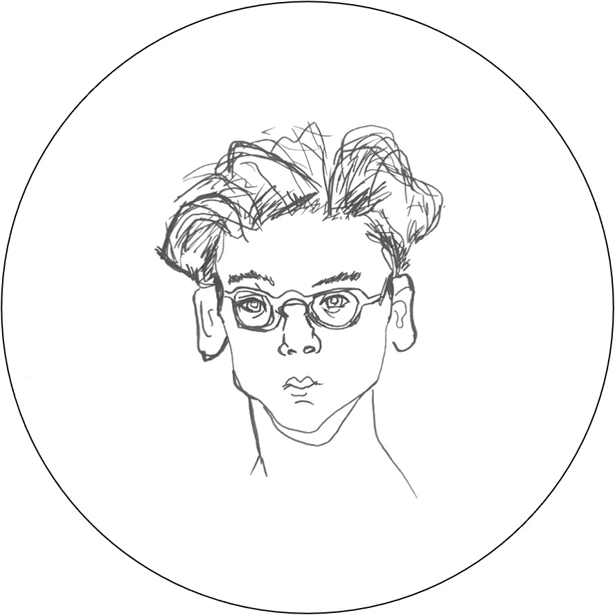
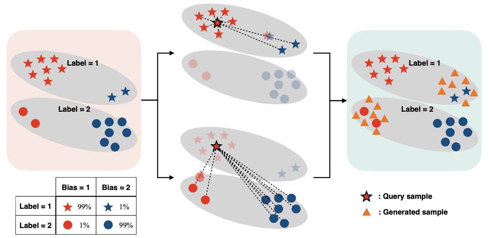
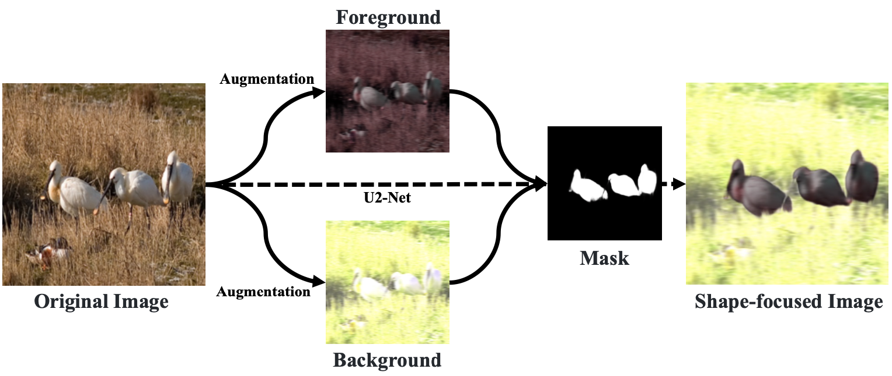

|
Sangjun Lee
I am a human-centered AI researcher and service designer with global experiences in East Asia, South Asia, Europe, and North America.
I earned my master's degree in artificial intelligence from Seoul National University and was advised by Byoung-Tak Zhang.
Before joining the master's program, I worked as a service designer at Korean Air.
I received my bachelor's degree in systems management engineering from Sungkyunkwan University.
Email /
Linkedin
|

|
|
Research
I am interested in human-centered AI and human-AI interaction, believing that human-centered AI technology based on better human-AI interaction can change our everyday life.
|
|

|
SelecMix: Debiased Learning by Contradicting-pair Sampling
Inwoo Hwang,
Sangjun Lee, Yunhyeok Kwak,
Seong Joon Oh,
Damien Teney,
Jin-Hwa Kim*,
Byoung-Tak Zhang*.
Neural Information Processing Systems (NeurIPS), 2022 (Scholar Award)
Preliminary version presented at ICML Workshop on Spurious Correlations, Invariance, and Stability, 2022
Paper /
Openreview
|
|

|
Improving Robustness to Texture Bias via Shape-focused Augmentation
Sangjun Lee,
Inwoo Hwang,
Gi-Cheon Kang,
Byoung-Tak Zhang.
CVPR Workshop on Human-centered Intelligent Services: Safety and Trustworthy, 2022 (Contributed Talk)
Paper /
Workshop
|
Work experiences
- 2022.07 ~ 2022.10, Neosapience, AI researcher, Intern
- 2015.01 ~ 2021.02, Korean Air, Service designer, Assistant Manager
- 2014.07 ~ 2014.08, LG CNS, User experience researcher, Intern
- 2014.02 ~ 2014.02, Grameen Bank, International internship program
|
Global experiences
- 2022.01 ~ 2022.04, Vancouver, Canada, University of British Columbia, Graduate exchange program
- 2018.11 ~ 2019.10, Guangzhou, China, Korean Air, In-company overseas training program
- 2014.02 ~ 2014.02, Dhaka, Bangladesh, Grameen Bank, International internship program
- 2013.09 ~ 2014.01, Odense, Denmark, University of Southern Denmark, Undergraduate exchange program
|
The source of this website is from here.
|
|
{kind=link}